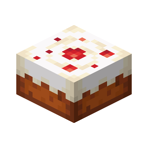

Minecraft Cake
A delicious in-game treat, as seen in Minecraft.

Ingredients
- 2 cups all-purpose flour
- 1 ½ cups granulated sugar
- 1 cup milk
- 1/2 cup unsalted butter, softened
- 2 large eggs
- 2 teaspoons vanilla extract
- 2 teaspoons baking powder
- 1/2 teaspoon salt
- Food coloring (green, blue, red)
- Buttercream frosting
- Edible decorations (Minecraft-themed if available)
Steps
- Preheat your oven to 350°F (175°C) and grease a square baking pan.
- In a mixing bowl, cream the softened butter and sugar until light and fluffy.
- Beat in the eggs, one at a time, and then add the vanilla extract.
- In a separate bowl, whisk together the flour, baking powder, and salt.
- Gradually add the dry ingredients to the wet mixture, alternating with milk, and mix until well combined.
- Divide the cake batter into separate bowls and add food coloring to create green, blue, and red batter.
- Pour each colored batter into the square baking pan, creating a pixelated pattern like in Minecraft.
- Bake the cake in the preheated oven for about 25-30 minutes or until a toothpick comes out clean.
- Let the cake cool completely before frosting it with buttercream frosting.
- Decorate the frosted cake with edible decorations, adding a touch of Minecraft-themed fun.
- Serve your delicious Minecraft cake and enjoy a tasty treat that brings the blocky world of Minecraft to life!